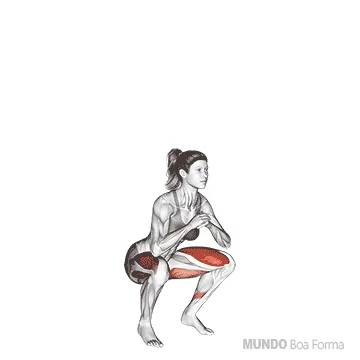
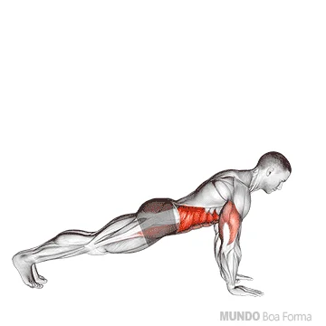
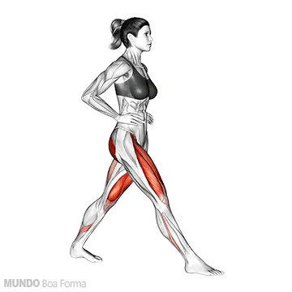
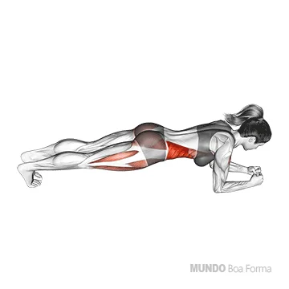
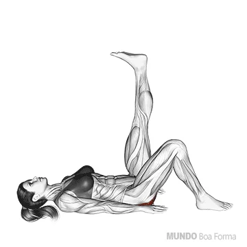
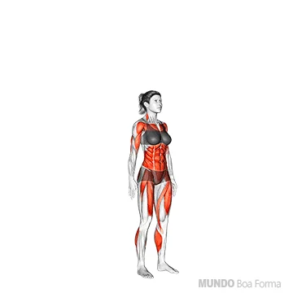

Plano de Exercícios e Alimentar
Exercícios
-

Agachamento: 3-4 séries de 8-12 repetições
-

Flexão de Braços: 3-4 séries de 8-12 repetições
-

Afundo : 3-4 séries de 8-12 repetições
-

Prancha: Segure de 30 a 60 segundos
-

Elevação de Quadril: 3-4 séries de 8-12 repetições
-

Burpees : 3 séries de 10 repetições
Alimentação
- Alimentar-se se possível a cada três horas
- Café da Manhã: 3 ovos mexidos (Proteínas, Vitamina D), aveia com frutas (Fibras, Vitaminas B e C), pasta de amendoim (Gorduras saudáveis, Proteínas)
- Lanche da Manhã: 1 fruta (banana ou maçã) (Vitaminas A e C, Potássio), 20g de amêndoas ou castanhas (Gorduras saudáveis, Magnésio, Vitamina E)
- Almoço: 100-150g de frango, carne magra ou peixe (Proteínas, Ferro, Ômega-3), 100g de arroz integral ou batata-doce (Carboidratos, Fibras, Vitaminas B), salada de folhas verdes (Vitamina K, Cálcio, Antioxidantes)
- Lanche da Tarde: Batata-doce ou pão integral (Carboidratos, Fibras, Vitaminas B), 100g de atum ou queijo cottage (Proteínas, Cálcio, Ômega-3)
- Jantar: 150g de frango ou peixe (Proteínas, Vitamina B12, Ômega-3), quinoa ou legumes cozidos (Fibras, Proteínas, Antioxidantes), legumes assados (Vitaminas A, C, Fibras)
- Ceia: 1 copo de leite ou iogurte natural (Cálcio, Proteínas, Vitaminas D e B12), 1 colher de sopa de pasta de amendoim ou nozes (Gorduras saudáveis, Proteínas, Vitamina E)
- Se Possível todo dia antes de dormir, exprema um limão com gengibre na água mineral
- Sempre verificar as informacoes nutricionais dos alimentos antes de comprar, isso ajuda no habito alimentar.
Alimente-se de 3:00 em 3:00 horas se possivel